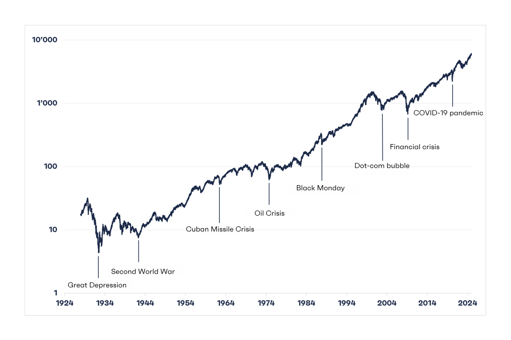

Maintenant que vous savez ce qu'est l'investissement et pourquoi c'est une nécessité vitale, qu'est-ce qui vous retient encore ? Probablement une petite voix intérieure qui vous répète des idées reçues, des phrases entendues lors de repas de famille ou vues dans des films hollywoodiens caricaturaux.
Ces croyances limitantes sont bien plus dangereuses qu'un krach boursier. Elles sont les freins invisibles qui vous maintiennent dans la "Rat Race" (la course des rats). Avant d'aller plus loin, nous devons faire un nettoyage de printemps mental et déconstruire ensemble, point par point, les trois plus gros mensonges qui circulent sur l'argent.
Mythe n°1 : "Il faut être riche pour investir" 💰
C'est l'excuse numéro 1, la muraille de Chine que se construisent la plupart des débutants. On imagine souvent l'investisseur comme un homme d'affaires en costume cravate à Wall Street, qui manipule des millions au petit-déjeuner. On se dit : "J'ai à peine 200€ de côté à la fin du mois, ça ne sert à rien, j'attendrai de gagner plus."
La réalité : C'est une erreur de raisonnement fondamentale. On ne devient pas investisseur parce qu'on est riche ; on devient riche parce qu'on a commencé à investir quand on ne l'était pas.
Il y a 30 ans, ce mythe était vrai : les frais de courtage étaient exorbitants et il fallait acheter des actions par paquets de 100. Aujourd'hui, cette barrière a volé en éclats. La technologie a démocratisé l'accès aux marchés financiers :
- Vous pouvez ouvrir un compte totalement gratuitement.
- Vous pouvez acheter des fractions d'actions (un bout d'action Amazon) pour quelques euros.
- Vous pouvez mettre en place des versements automatiques de 50€ par mois.
Attendre d'avoir "assez d'argent" pour commencer à investir, c'est comme attendre d'être en forme olympique pour s'inscrire à la salle de sport. Ça n'a aucun sens. C'est la pratique qui crée le résultat. Ce qui compte, ce n'est pas la somme de départ, c'est l'habitude et le temps. 100€ investis chaque mois dès maintenant vaudront toujours plus que 500€ par mois investis dans 10 ans, grâce à la magie des intérêts composés (et l'inflation comme vu auparavant !).
Mythe n°2 : "La Bourse, c'est le Casino" 🎰
C'est l'argument favori des sceptiques. "C'est risqué, c'est du loto, tu vas tout perdre comme mon oncle en 2000." Beaucoup assimilent la Bourse à un jeu de hasard pur, où les cours montent et descendent sur un coup de tête et où gagner de l'argent relève de la chance.
La réalité : Il y a une différence mathématique et économique fondamentale entre les deux.
Pour que vous gagniez, le casino doit perdre. Les règles sont truquées statistiquement pour que "la maison gagne toujours" à la fin.
C'est un supermarché d'entreprises. Derrière chaque action, il y a des employés, des usines et des produits vendus. Tout le monde peut gagner en même temps.
Quand vous achetez une action Air Liquide ou Microsoft, vous ne pariez pas sur le rouge. Vous devenez propriétaire d'une machine à cash rentable qui existe depuis des décennies. Si l'entreprise vend plus de produits, elle gagne plus d'argent. Tout le monde y gagne : l'État (taxes), les salariés (salaires), et vous (dividendes/plus-values). Ce n'est pas de la chance, c'est de l'économie. Tant que l'humanité produira de la richesse, la Bourse montera sur le long terme.
De plus, l'histoire nous offre une preuve irréfutable. Depuis plus de 100 ans, le monde a traversé les pires catastrophes imaginables : deux Guerres Mondiales, la Grande Dépression de 1929, la Guerre Froide, la bulle Internet, la crise des Subprimes en 2008 ou encore une pandémie mondiale. Le marché est-il mort ? Non.

Sur cette très longue période, le marché boursier américain (S&P 500) a généré une performance moyenne d'environ 10% par an (soit environ 7% de richesse réelle créée une fois l'inflation déduite). Cela signifie que malgré le chaos temporaire, l'économie finit toujours par se relever, s'adapter et repartir à la hausse.
La différence avec le jeu est là : au Casino, plus vous jouez longtemps, plus vous êtes sûr de perdre (statistiquement). En Bourse, plus vous investissez longtemps, plus la probabilité de gagner s'approche de 100%.
Mythe n°3 : "Il faut être un expert en maths ou en finance" 🤓
L'industrie financière adore entretenir ce mythe. Elle utilise un jargon volontairement complexe (EBITDA, PER, Volatilité implicite, Dérivés, Futures...) pour justifier ses frais de gestion élevés et faire croire aux particuliers qu'ils sont incapables de gérer leur argent eux-mêmes. On pense qu'il faut un Bac+5 en mathématiques, 3 écrans d'ordinateur et suivre l'actualité économique 24h/24 pour s'en sortir.
La réalité : L'investissement "Quality" (ce que nous verrons dans cette formation) ne demande aucune compétence mathématique complexe. Si vous savez faire une addition, une soustraction et une multiplication (niveau école primaire), vous êtes surqualifié.
Peter Lynch 🧠
"Tout le monde a le cerveau suffisant pour gagner de l'argent en Bourse. Mais tout le monde n'a pas l'estomac."
En réalité, les plus grands investisseurs de l'histoire ne sont pas des génies des mathématiques, ce sont des génies du comportement. Isaac Newton, l'un des plus grands physiciens de l'histoire, a perdu toute sa fortune dans une bulle financière parce qu'il a paniqué. Il a dit ensuite : "Je peux calculer le mouvement des corps célestes, mais pas la folie des hommes."
Votre succès dépendra à 10% de votre intelligence et à 90% de votre capacité à maîtriser vos émotions : ne pas s'enflammer quand tout monte (avidité) et ne pas paniquer quand tout baisse (peur). Le bon sens paysan bat toujours les algorithmes complexes sur le long terme.
🔑 Ce qu'il faut retenir
Les barrières à l'entrée sont tombées. Vous n'avez pas besoin d'être riche, chanceux ou surdiplômé pour investir. La seule véritable barrière restante est psychologique. Si vous avez 50€, du bon sens et la volonté de contrôler vos émotions, vous êtes déjà mieux armé que la majorité des gens.